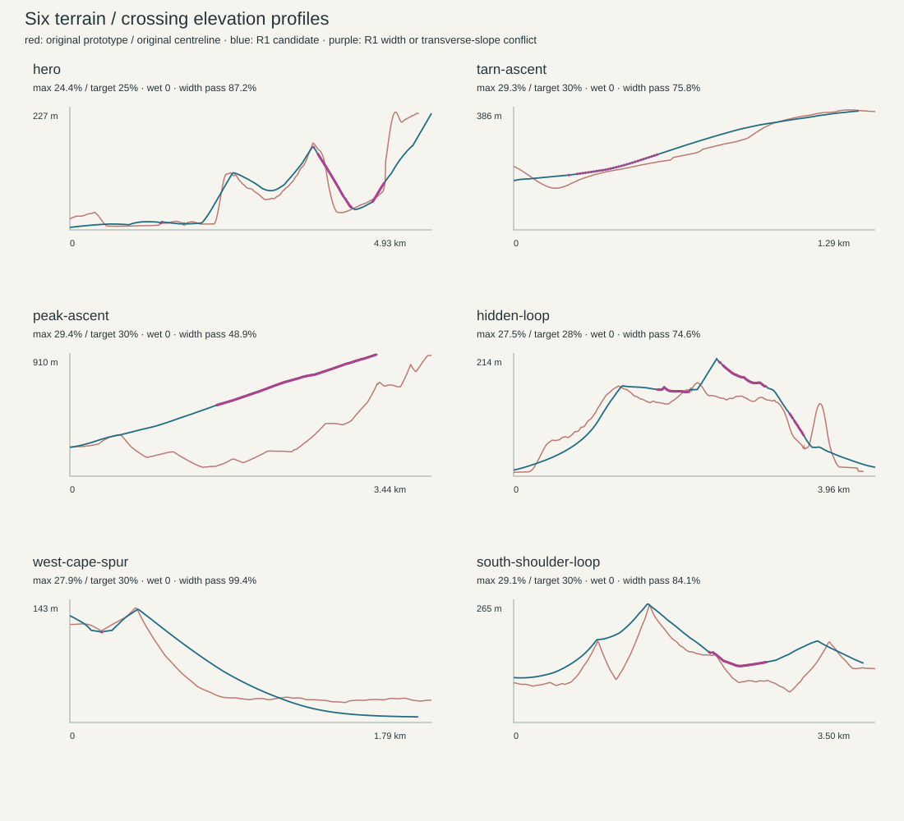
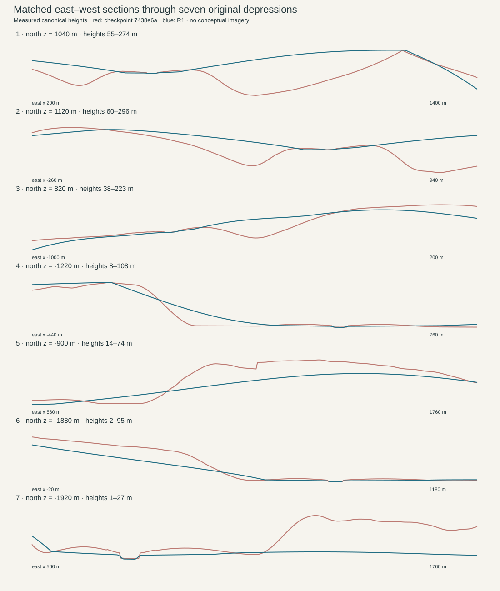

Aurora Rest · GEO-R02B-R1
Review candidate — full acceptance remains open. Seven original large depressions corrected. Route centreline improvement is separate from route-width approval. Read the technical review, root causes and acceptance gates.
Open interactive Three.js terrain · Diagnostics · Elevation profiles
Eight actual browser captures, matched cameras, 1600 × 1200. Click an image for its original. Ground cameras retain x/z and viewing angles; eye altitude follows the corrected ground.
Actual browser diagnostics
Height: blue low / red high. Slope: green <12%, yellow <25%, orange <35%, red <60%, purple steeper. Drainage arrows: sampled downhill directions. Gold depression crosses: seven original locations; red: remaining dry depressions including the smaller diagnostic threshold. River alignment: blue surface / orange bed. Route conflicts: green candidate / purple width or transverse slope / red longitudinal grade.
Scientific diagnostic figures
These plots are heightfield measurements, separate from the browser images.


Geographic references
 Approved A-R1 geography
Approved A-R1 geography Original Aurora Rest illustration
Original Aurora Rest illustrationStop: GEO-R02B-R1 visual and technical review. No merge, deployment or world population.